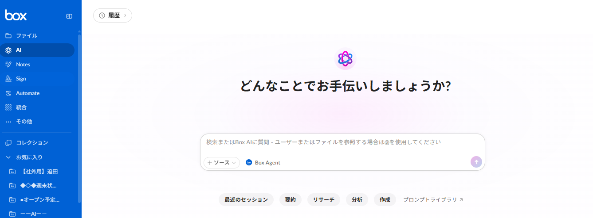
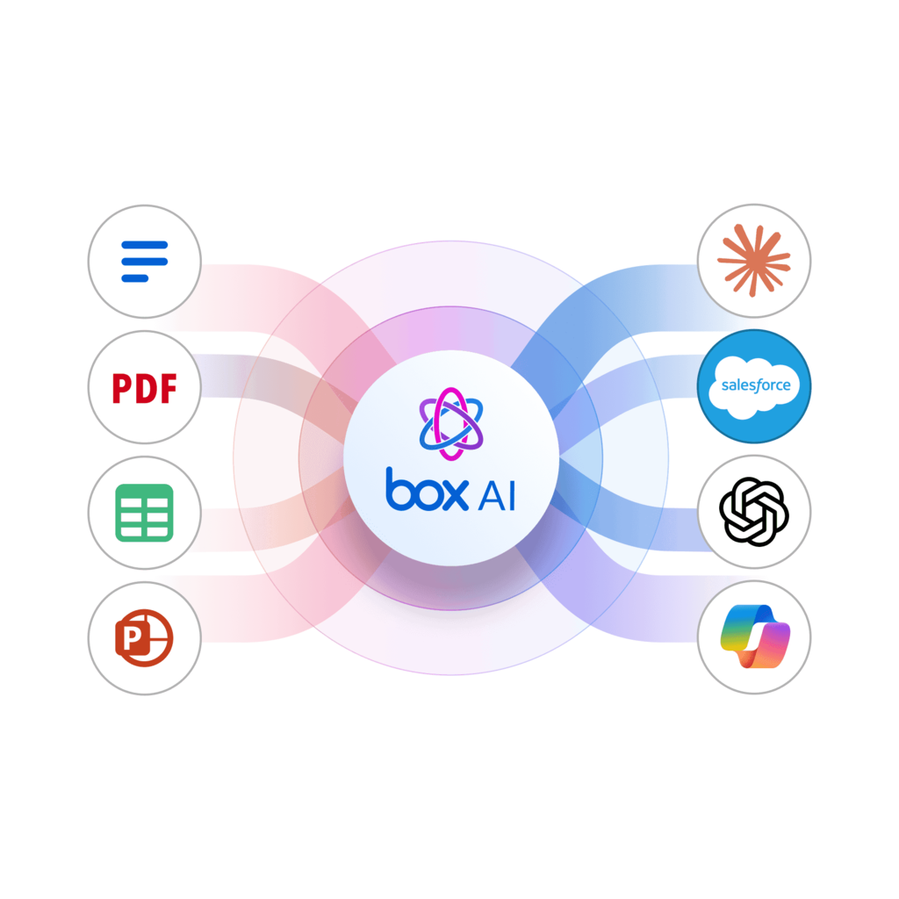
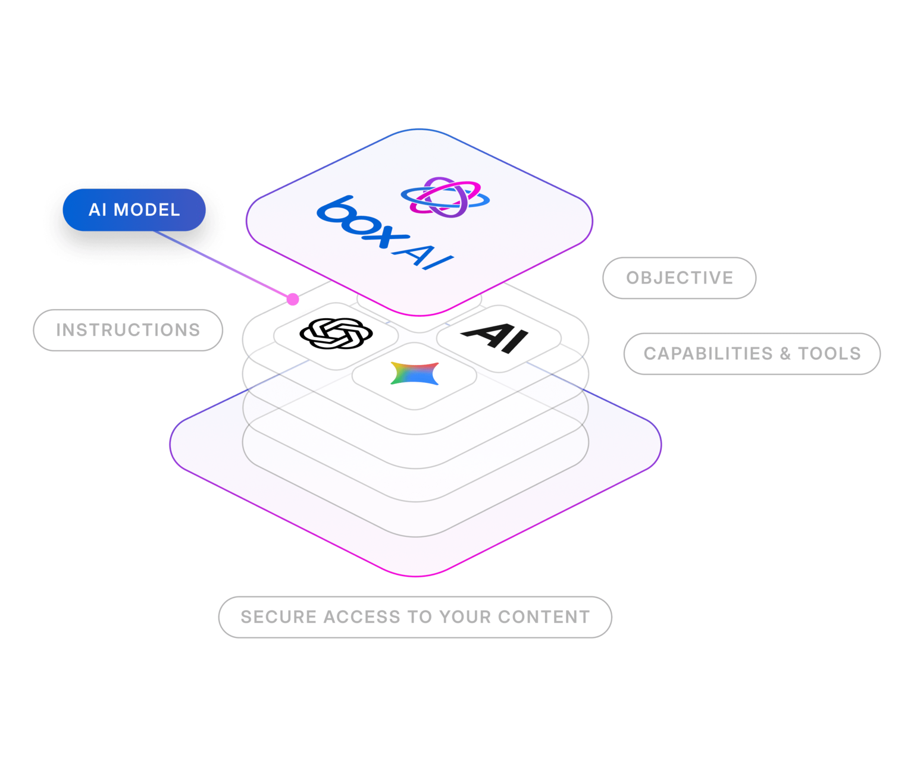
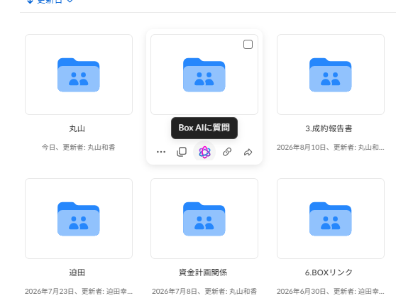
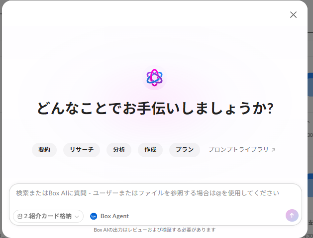
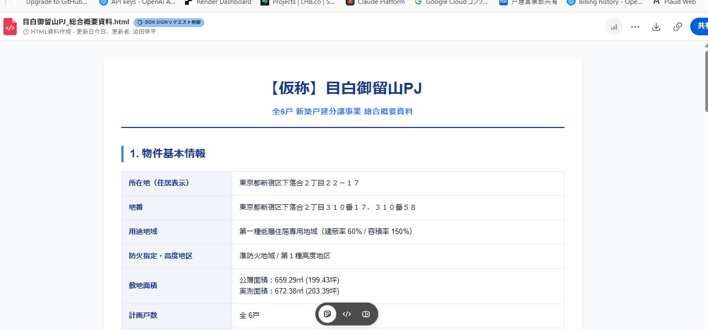
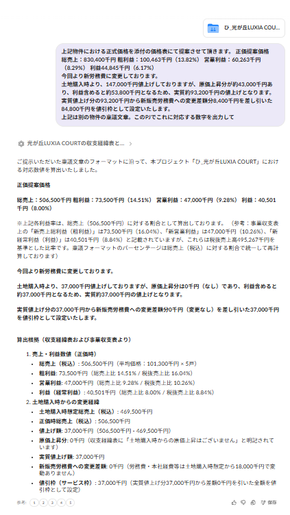
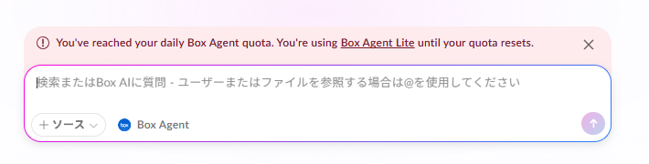

営業業務 × BOX AI Agent
検索だけじゃない、
BOX AI Agent。
物件資料価格表PJコードサービス枠管理表稟議関連資料
確認・
要約・
抽出・
整理
すべて、チャット形式で。

実際のBox AI画面

02｜BOX AI Agentの仕組み
ただのチャットAIでは、ない。
▤
あらゆる形式の資料を参照PDF・Excel・PowerPoint・Word など、Box上のファイルをそのまま読む
✦
複数のAIモデル＋エージェント機能用途に応じて、裏側で複数のモデルを組み合わせて処理する
🔒
機密情報の取り扱い・画像の読み込みも複数のエージェントを活用しているため、精度の高い結果になりやすい

03｜エージェントの構成
AIは、層でできている。
🔐
コンテンツへの安全なアクセス SECURE ACCESS土台。Boxの権限の範囲内でのみ、資料を参照する
✦
AIモデル AI MODEL用途に応じたモデルが選ばれる
✎
指示・目的 INSTRUCTIONS / OBJECTIVEこちらの書き方で結果が大きく変わる部分
⚙
機能とツール CAPABILITIES & TOOLS検索・要約・一覧化・下書き作成などの実行手段
04｜点在する資料の横断整理
散らばった資料を、まわってまとめる。
✦
AIが横断参照✓基本情報
✓価格
✓PJコード
✓確認事項
05｜情報をつなぐ共通キー
カギは、PJコード。
資料名・フォルダ名・ファイル内の記載に、
できるだけPJコードを含めてください。
資料名フォルダ名ファイル内の記載メールのタイトル・本文
3320×××
→ 検索・抽出・集約の精度が上がる
06｜具体的な使い方
選んで、聞くだけ。


「このフォルダ内の資料を要約してください」
「物件名とPJコードを一覧化してください」
「価格情報を整理してください」
「サービス枠管理表からこの物件の残額を確認してください」
「稟議・決裁資料の下書きを作成してください」
今できるのは、まだここまで。出力形式もまだ限定的です。実際のファイルを編集するなど、タスクそのものを完了させることはまだできません。
07｜実際の活用例
実際に、やってみた。
✓
物件リストにPJコード・価格を付与し、顧客情報を紐付け別々の資料の情報を、ひとつの一覧に
✓
物件概要フォルダを指定し、中のファイルの概要をHTMLに集約営業が確認しやすい総合概要資料へ
✓
事業収支・収支経緯表・サービス枠管理表を分析し、決裁の定型文に合わせて出力このまま、ラクモのワークフローに貼る形へ調整できる

実例｜目白御留山PJ 総合概要資料

08｜今後の活用に備えて
自分の権限の範囲に、集めていく。
物件・PJの資料
メール本文
添付資料
価格表
稟議関連資料
▣
AIは、Boxの権限の中で動く
🔑
キーを中心に整理して格納AIが突合しやすいよう、PJコードなど一定のキーを軸に整理しながら保存する✉
GWS × Box 連携は許可済みGmailの本文をBoxに蓄積する機能もあるので、メールの情報も残していける09｜良い結果を得るコツ
プロンプトが、9割。
1
対象資料どのフォルダ・どの資料を見るか
2
確認したい項目売価・税額・残額・粗利 など
3
出力の形一覧表・CSVなど
実際のプロンプト例
このフォルダの内容を突合してください。
そのうえで、決裁資料用の売価・税額・サービス枠残額・粗利などの数字を、まとめて表示してください。
出力は一覧表でお願いします。
💡 見てほしい資料・欲しい項目・出したい形。この3つを丁寧に書くほど、実務で使いやすい結果になります。
10｜利用時の注意①
AIは、まだ覚えていない。
🧠
背景・前提は蓄積されないこのAIは、これまでのやり取りや案件の背景といったコンテキストを、まだ蓄積できません。📝
毎回しっかり説明する前提・対象資料・欲しい形を、毎回のプロンプトで説明する必要があります。✨
初回のプロンプトが肝心事前にChatGPTなどを活用してプロンプトを作成してから使うと、結果が安定します。うまく出力できたプロンプトは、ぜひ共有していきましょう。
11｜利用時の注意②

BOX AIには、1日の利用制限があります
制限を超えると、動作するモデルが下がります。
11｜利用時の注意②
下がった後は、軽めの作業に。
モデルが下がっているときは
- 横断整理・複雑な下書き・HTMLまとめなど重い作業は避ける
- 簡単な要約・資料確認など、作業は軽めにしておく
- 今後、プロンプトを含めて改善されていく見込みです
START SMALL, BUILD SMART
まずは、身近なところから。
1
身近なフォルダ・管理表から試す
→
身近なフォルダ・管理表から試す
2
無理のない範囲で使ってみる
→
無理のない範囲で使ってみる
3
Boxへ資料を整理・蓄積
Boxへ資料を整理・蓄積
Box上に資料を整理・蓄積していくことが、今後の活用につながります。
AIは、これからも進化していく。
✦ 活用事例・うまくいったプロンプトは、ぜひご共有ください
0:00 / --:--